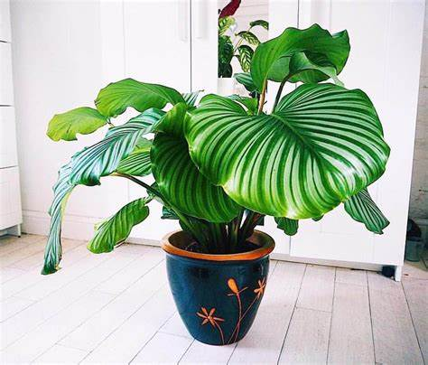
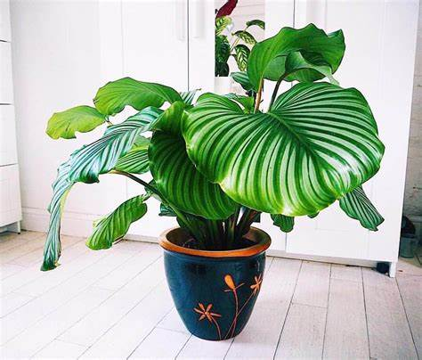
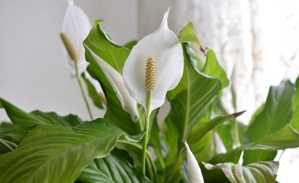
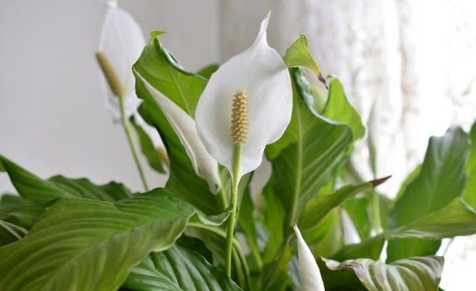
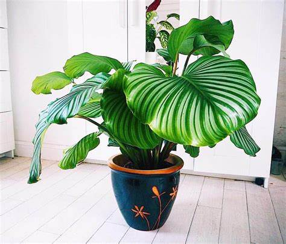
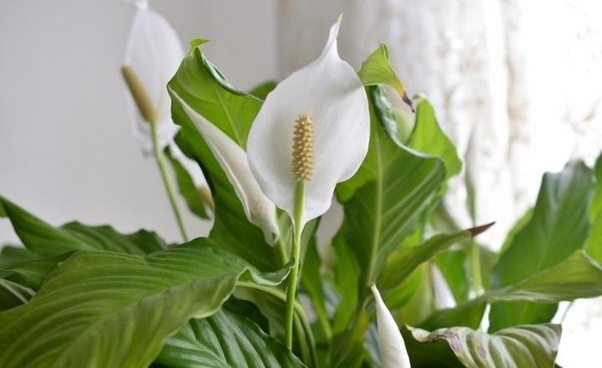
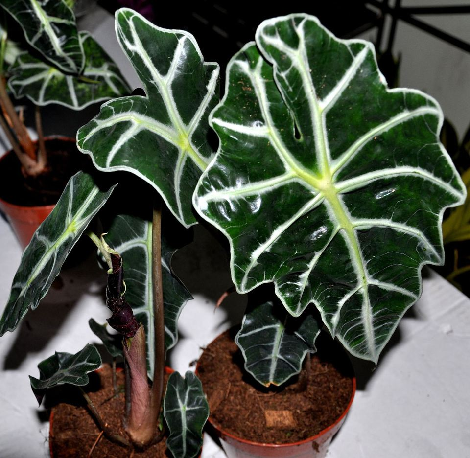
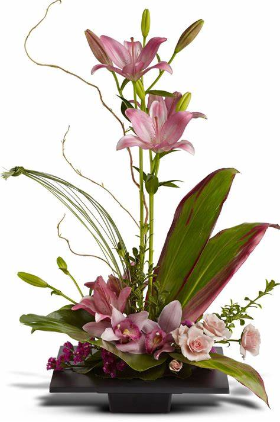

:max_bytes(150000):strip_icc()/CymbidiumOrchid-GettyImages-506065092-c5a8e2a0d48041ec8b91c6c245cb9461.jpg) 

| HOME | ABOUT PLANTS | SPECIES | CONTACT US |
|---|
| SPECIES |


|
 |
|  | ||
If you want to invigorate just about any room, pick out one of these best indoor plants to liven up your space. Not only are indoor plants brilliant for decorating purposes, you can also rely on them to upgrade your health, provide clean air and boost your overall wellbeing. Plus, many of our houseplant suggestions below, like the spider plant, are fairly low maintenance, making them perfect for beginners.
You can take your pick of low-light options, including the snake plant and ZZ plant, which would look great in a living room. Browse plants for the office (we like peperomia or peace lilies) as well as go-to choices for the bedroom. There are even tons of tall indoor plants such as Monstera Deliciosa that tend to be a breeze to maintain. And if you like the idea of manifesting good luck, health and wealth, you'll be delighted by feng shui plants.
So, say goodbye to intense care routines and go for one (or more) of these affordable and popular houseplants — indoor trees included — that can easily be ordered online. You'll be surprised how stress-free being a plant parent can really be.
Some of the best Indoor plants are Snake plant,Pothos,Peace Lily,Spider plant,Aloe Vera,Monstera Deliciosa,etc. House plants are good for your health and not just for their beauty. Studies have also proven that indoor plants improve concentration and productivity,reduce stress levels and boost your mood making them perfect for not just your home but your work space too.